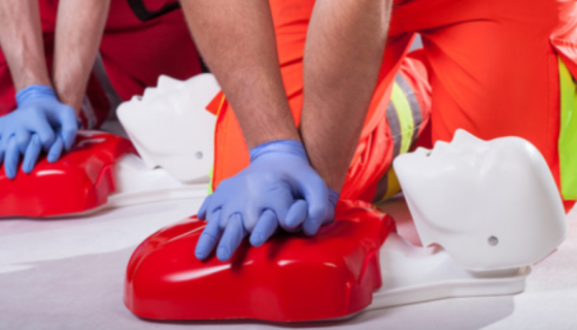
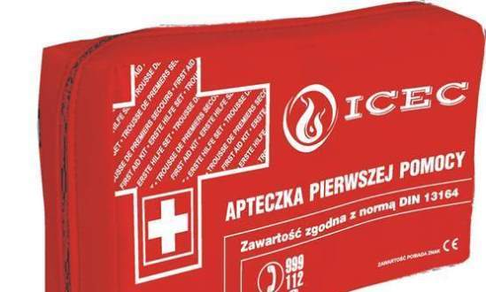

Quiz
-
Kto powinien udzielać pierwszej pomocy?
-
Co to jest AED?
-
Jak sprawdzamy reakcję poszkodowanego?

-
Jaka jest główna zasada reanimacji?

-

Co jako pierwsze powinno się zrobić na miejscu wypadku?
-

Co znajduje się w podstawowym wyposażeniu apteczki pierwszej pomocy?
-
W przypadku krwawienia z nosa należy:
-
Bezpośrednio po stwierdzeniu u dziecka braku oddechu należy:

-
Pierwszy krok w postępowaniu z ofiarą zatrucia czadem to: